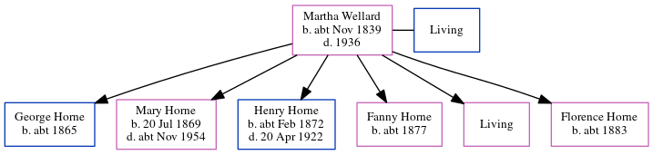

Martha Horn (née Wellard) cNov 1839 - 1936
[ Home ] | [ Calendar ] | [ Surnames Index ] | [ Census Index ] | [ Family History ]Martha Wellard, the wife of George Horn (the three times great-uncle of Nigel Horne), was born in St Lawrence, Thanet, Kent, England c. Nov 18391,2,3,4,5,6, was baptized there on Nov 24, 1839 and also married George (a brewery laborer with whom she had 6 children: George, Mary Jane, Henry William, Fanny, Ellen Martha and Florence, along with 1 surviving child) there on Nov 5, 18637 (Oct/Nov/Dec).
During her life, she was living at 76 Queen Street, Ramsgate, Kent, England on Apr 2, 187111; at Queen Street in Ramsgate on Apr 3, 18819; in Ramsgate in 18913 and in 19014; at Paradise in Ramsgate on Mar 31, 19018; and in Ramsgate on Apr 2, 19115.
She died in 1936 in Thanet, Kent, England.
Children
- George was born c. 1865
- Mary Jane was born on Jul 20, 1869
- Henry William was born c. Feb 1872
- Fanny was born c. 1877
- Florence was born c. 1883
Citations
- 1871 England Census Online publication - Provo, UT, USA: The Generations Network, Inc., 2004.Original data - Census Returns of England and Wales, 1871. Kew, Surrey, England: The National Archives of the UK (TNA): Public Record Office (PRO), 1871. Data imaged from the National
- 1881 England Census Online publication - Provo, UT, USA: The Generations Network, Inc., 2004. 1881 British Isles Census Index provided by The Church of Jesus Christ of Latter-day Saints © Copyright 1999 Intellectual Reserve, Inc. All rights reserved. All use is subject to the
- 1891 England Census Online publication - Provo, UT, USA: The Generations Network, Inc., 2005.Original data - Census Returns of England and Wales, 1891. Kew, Surrey, England: The National Archives of the UK (TNA): Public Record Office (PRO), 1891. Data imaged from The National (Relation to Head of House: Wife)
- 1901 England Census Online publication - Provo, UT, USA: The Generations Network, Inc., 2005.Original data - Census Returns of England and Wales, 1901. Kew, Surrey, England: The National Archives of the UK (TNA): Public Record Office (PRO), 1901. Data imaged from the National (Relation to Head of House: Wife)
- 1911 England Census Online publication - Provo, UT, USA: Ancestry.com Operations, Inc., 2011.Original data - Census Returns of England and Wales, 1911. Kew, Surrey, England: The National Archives of the UK (TNA), 1911. Data imaged from the National Archives, London, England. (Marital Status: MarriedRelation to Head of House: Wife)
- England & Wales, FreeBMD Birth Index, 1837-1915 Online publication - Provo, UT, USA: The Generations Network, Inc., 2006.Original data - General Register Office. England and Wales Civil Registration Indexes. London, England: General Register Office. © Crown copyright. Published by permission of the Cont
- 1911 England Census Online publication - Provo, UT, USA: Ancestry.com Operations, Inc., 2011.Original data - Census Returns of England and Wales, 1911. Kew, Surrey, England: The National Archives of the UK (TNA), 1911. Data imaged from the National Archives, London, England.
- 1901 England, Wales & Scotland Census - Findmypast (was age 61 and the wife of the head of the household)
- 1881 England, Wales & Scotland Census - Findmypast (was age 41 and the wife of the head of the household)
- 1911 Census for England & Wales - Findmypast (was age 71 and the wife of the head of the household)
- 1871 England, Wales & Scotland Census - Findmypast (was age 31 and the wife of the head of the household)
Media
England Births & Baptisms 1538-1975 - R_885342881
England & Wales births 1837-2006 - BMD/B/1839/4/MZ/001237/039
Kent, Canterbury Archdeaconry marriages - GBPRS/CANT/M/97021658/2
England & Wales marriages 1837-2005 - BMD/M/1863/4/AZ/002407/011
England Marriages 1538-1973 - R_848394990/2
Family Tree
Generated by ged2site. Last updated on Jun 11, 2024